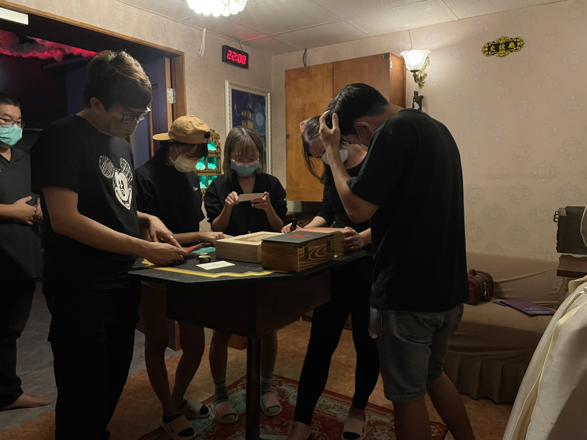

三階段觀察式測試，發現認知衝突，以線性入口包裹非線性玩法，評分穩定維持 4.8–4.9 顆星。
《鱗屋之中》是頂級創意行銷的原創 IP 實境解謎遊戲，採用非線性設計——玩家可從多個切入點進入謎題、自由探索，而非按固定順序推進。我從設計初期就加入討論，並主導上市前的三階段使用者測試。
圖片來源：吃貨瑪莉
非線性設計是這款遊戲的核心特色，但也是最大的認知風險：大多數玩家的心理模型是線性的，他們預期有明確的「下一步」提示。
如果玩家在進入遊戲的早期就感到困惑、不知道該做什麼，會直接流失興趣——而這個問題若不解決，非線性設計反而會成為體驗的阻礙。
測試對象從「熟悉度高」到「最接近真實玩家」逐階遞進，每階段 12–18 人，共逾 40 人參與：
找出基本流程問題、機關與題目的可行性
測試非完全了解設計意圖下的遊玩反應
驗證接近上市狀態的實際體驗
記錄玩家在哪些節點停頓、反覆確認、或出現明顯困惑行為，測試後進行訪談了解思考過程，再以 Trello 建立三層歸納結構：
現場觀察
節點停頓・反覆確認・困惑行為 → 測試後訪談思考過程
第一層：空間（房間）
以遊戲場景隔間為單位，每個房間獨立一欄
每張卡片標注
測試過程中曾討論是否將整個遊戲改為線性設計，以徹底消除認知衝突。兩個方向的取捨如下：
✕ 放棄
雖能消除認知衝突，但會失去這款原創 IP 的核心遊戲性——自由探索的樂趣。
✓ 採用
保留非線性核心，以線性進程給玩家方向感。玩家熟悉後自然進入自由探索。
具體實作：
在關鍵節點提供方向提示，讓玩家知道「大方向」，而不是下一個固定步驟。
讓玩家隨時知道目前在哪個階段，降低迷失感，同時保留自由決定路徑的空間。
逃脫吧平台評分